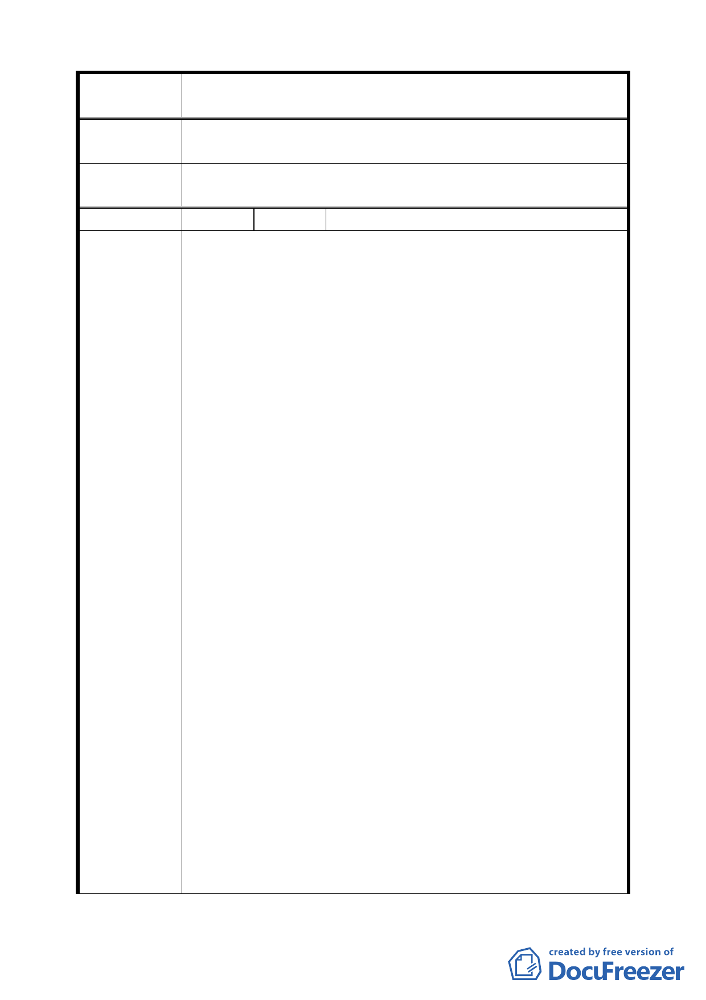

案 名 臺北市文山區都市計畫通盤檢討（主要計畫）案
審查結論
（94.7.4）
委員會議
決議
同編號 21。
編 號 ２３ 陳情人 石遠毅（09430082800）
一、埤腹環山道路係平行於和興路，環繞小山崙一周。由於
目前社區尚未開始大型整建活動，山崙維持自然山林現
況，提供各種動物棲地，對於埤腹及木柵地區的生態環
境及微氣候調節有極大貢獻。
二、近年文山區開發迅速，能維持自然環境的地區逐漸稀少，
景美溪及仙跡岩所夾之木柵地區平原河谷地，除了崙尾
開闢成為人造公園而能維持原始雜木林的自然狀態之
外，大多已經開闢成為社區。部分不適於建築房屋之景
美溪的舊河道也大多被人造公園所取代。木柵區內雖有
景美溪繞行南側，但卻因為整建的堤外人造環境，無形
中減損了原有溪流的自然度，使得原來具有豐富鳥類及
動物的溪床棲地喪失原有的功能。目前僅於此小山丘尚
能提供動物自然棲地，可謂極為珍貴。若遽然將其開闢
成道路，則原來所擁有的自然環境勢將更嚴重的破壞且
陳情理由
（木柵）
難以恢復。
三、就地質與工程之角度，埤腹山崙之岩層係屬砂頁岩互層
之沈積岩層，岩層向南傾斜。換言之，南側坡面係屬順
向坡之地質敏感區，依本都市計畫之上位計畫----臺北市
綜合發展計畫之規範以及都市發展局報告及圖說（臺北
市土地利用潛力分析圖，民國 84 年委託中華民國工程環
境學會所製作），此區為「環境冒險率」最高的超過 12
級的地質災害敏感區。
四、景美溪因埤腹山崙之阻擋而向南繞行，使得埤腹社區形
成一個由北山南水環繞的袋狀封閉空間，形塑成一個相
當獨立的社區，建議市政府能提供本區一個社區的總體
營造的機會與環境，由政府與社區民眾共同參與，形塑
一個與具有社區特色、打造一個與自然環境相近的社區
典範。
五、埤腹地區的袋狀地形，二端縮限形成重要的發展限制，
此二端為和興路二端出口，由於出口狹小，對本區造成
通過流量的限制。如果中袋地區大規模發展，卻在二端
一五